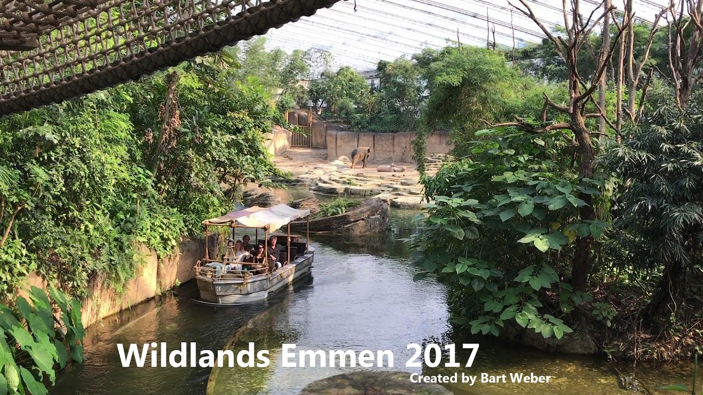

WildLand Emmen
Febuary 20, 2019
TERMS AND CONDITIONS
WILDLANDS Adventure Zoo Emmen is a park where our animals enjoy a great deal of freedom and where various forms of attractions, entertainment and cultural activities are offered. That is why it is of the utmost importance for your own safety and that of others that you strictly adhere to our general terms and conditions for park and theater visits. These conditions can be found below and can be requested from our information desk.
Conditions for theater visits and specific reservations for events and catering activities
For all guests who visit theater performances in the ATLAS Theater, the General Conditions for Visitors of the VSCD also apply, these can be found on the website of the VSCD; www.VSCD.nl and are also listed on our own website.
If there are reservations for events and activities, the Uniform Conditions for the Hotel and Catering Industry (UVH) apply; UVH and are also listed on our own website.
General
We want to keep our beautiful park and theater beautiful. You should therefore stay on the designated walking paths and walking routes unless accompanied by an employee of WILDLANDS Adventure Zoo Emmen. Use the facilities of the park neatly and carefully. Always dispose of your waste in the appropriate waste bins.
No alcohol is served to young people under the age of 18.In the park there is a general smoking ban in our buildings, in and around animal enclosures, in attractions and in queues. Smoking is only allowed in the park at the designated locations, these locations are equipped with ashtrays.It is not allowed to bring narcotics and alcoholic substances, dangerous substances and / or dangerous objects or weapons.
Instructions from our employees must be followed at all times.It is not allowed to take property from the park home. The police are always called in in the event of theft.Unwanted intimacies and / or undesirable behavior, as well as the use of physical and / or verbal violence towards other guests or employees are not permitted.WILDLANDS Adventure Zoo Emmen is authorized to decommission and keep an attraction or part of the park out of operation at its own discretion, without this giving any right to a refund (of part of the price) of the entrance ticket and / or other compensation.
WILDLANDS Adventure Zoo Emmen reserves the right to change the opening days and / or opening times during the season.Useful drinks at the designated places (catering locations, picnic benches, stopping places).At our catering locations, including terraces, it is not allowed to consume your own foodstuffs.
Entrance tickets
Each entrance ticket is valid for one person, Children up to 2 years old have free entrance, Not valid in combination with other promotions, (group) discounts, packages, other reservations, Air Miles or tickets obtained elsewhere.Entrance tickets may under no circumstances be resold, altered, distributed or duplicated and are not exchangeable for cash, any other ticket or otherwise.
Clothing and footwear
We expect you to wear clothing that matches the character of our park. Access to the park can be refused if your clothing or appearance is detrimental to the family character of WILDLANDS Adventure Zoo Emmen.It is not allowed to enter the park bare-chested.
Entrance
It is not allowed to be on the grounds of WILDLANDS Adventure Zoo Emmen without a valid admission ticket. The admission ticket loses its validity upon leaving the park. Children under the age of 12 must visit the park under supervision. Access control is applied to every admission ticket, the admission ticket must be shown to an employee on request. Identification is required if requested by one of our employees.
Safety
For the safety and welfare of our animals, we are not allowed to feed, excite, scare and / or release our animals. For your safety and the welfare of our animals, it is not allowed to throw, stab and / or leave objects in, through or over the enclosure of animal enclosures.For your safety and welfare of the animals, it is not allowed to climb on and / or over fences of animal enclosures.